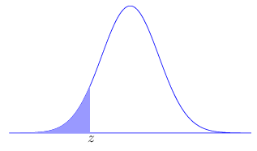
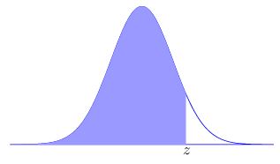

Appendix B z-table
Standard Normal Distribution: Area under the curve to the Left of the Z score.

\begin{equation*}
\begin{array}{|c|c c c c c c c c c c} \\ \hline
z & 0.00 & 0.01 & 0.02 & 0.03 & 0.04 & 0.05 & 0.06 & 0.07 & 0.08 & 0.09 \\ \hline
-3.4 & 0.0003 & 0.0003 & 0.0003 & 0.0003 & 0.0003 & 0.0003 & 0.0003 & 0.0003 & 0.0003 & 0.0002 \\
-3.3 & 0.0005 & 0.0005 & 0.0005 & 0.0004 & 0.0004 & 0.0004 & 0.0004 & 0.0004 & 0.0004 & 0.0003 \\
-3.2 & 0.0007 & 0.0007 & 0.0006 & 0.0006 & 0.0006 & 0.0006 & 0.0006 & 0.0005 & 0.0005 & 0.0005 \\
-3.1 & 0.0010 & 0.0009 & 0.0009 & 0.0009 & 0.0008 & 0.0008 & 0.0008 & 0.0008 & 0.0007 & 0.0007 \\
-3.0 & 0.0013 & 0.0013 & 0.0013 & 0.0012 & 0.0012 & 0.0011 & 0.0011 & 0.0011 & 0.0010 & 0.0010 \\
-2.9 & 0.0019 & 0.0018 & 0.0018 & 0.0017 & 0.0016 & 0.0016 & 0.0015 & 0.0015 & 0.0014 & 0.0014 \\ \hline
-2.8 & 0.0026 & 0.0025 & 0.0024 & 0.0023 & 0.0023 & 0.0022 & 0.0021 & 0.0021 & 0.0020 & 0.0019 \\
-2.7 & 0.0035 & 0.0034 & 0.0033 & 0.0032 & 0.0031 & 0.0030 & 0.0029 & 0.0028 & 0.0027 & 0.0026 \\
-2.6 & 0.0047 & 0.0045 & 0.0044 & 0.0043 & 0.0041 & 0.0040 & 0.0039 & 0.0038 & 0.0037 & 0.0036 \\
-2.5 & 0.0062 & 0.0060 & 0.0059 & 0.0057 & 0.0055 & 0.0054 & 0.0052 & 0.0051 & 0.0049 & 0.0048 \\ \hline
-2.4 & 0.0082 & 0.0080 & 0.0078 & 0.0075 & 0.0073 & 0.0071 & 0.0069 & 0.0068 & 0.0066 & 0.0064 \\
-2.3 & 0.0107 & 0.0104 & 0.0102 & 0.0099 & 0.0096 & 0.0094 & 0.0091 & 0.0089 & 0.0087 & 0.0084 \\
-2.2 & 0.0139 & 0.0136 & 0.0132 & 0.0129 & 0.0125 & 0.0122 & 0.0119 & 0.0116 & 0.0113 & 0.0110 \\
-2.1 & 0.0179 & 0.0174 & 0.0170 & 0.0166 & 0.0162 & 0.0158 & 0.0154 & 0.0150 & 0.0146 & 0.0143 \\
-2.0 & 0.0228 & 0.0222 & 0.0217 & 0.0212 & 0.0207 & 0.0202 & 0.0197 & 0.0192 & 0.0188 & 0.0183 \\ \hline
-1.9 & 0.0287 & 0.0281 & 0.0274 & 0.0268 & 0.0262 & 0.0256 & 0.0250 & 0.0244 & 0.0239 & 0.0233 \\
-1.8 & 0.0359 & 0.0351 & 0.0344 & 0.0336 & 0.0329 & 0.0322 & 0.0314 & 0.0307 & 0.0301 & 0.0294 \\
-1.7 & 0.0446 & 0.0436 & 0.0427 & 0.0418 & 0.0409 & 0.0401 & 0.0392 & 0.0384 & 0.0375 & 0.0367 \\
-1.6 & 0.0548 & 0.0537 & 0.0526 & 0.0516 & 0.0505 & 0.0495 & 0.0485 & 0.0475 & 0.0465 & 0.0455 \\
-1.5 & 0.0668 & 0.0655 & 0.0643 & 0.0630 & 0.0618 & 0.0606 & 0.0594 & 0.0582 & 0.0571 & 0.0559 \\ \hline
-1.4 & 0.0808 & 0.0793 & 0.0778 & 0.0764 & 0.0749 & 0.0735 & 0.0721 & 0.0708 & 0.0694 & 0.0681 \\
-1.3 & 0.0968 & 0.0951 & 0.0934 & 0.0918 & 0.0901 & 0.0885 & 0.0869 & 0.0853 & 0.0838 & 0.0823 \\
-1.2 & 0.1151 & 0.1131 & 0.1112 & 0.1093 & 0.1075 & 0.1056 & 0.1038 & 0.1020 & 0.1003 & 0.0985 \\
-1.1 & 0.1357 & 0.1335 & 0.1314 & 0.1292 & 0.1271 & 0.1251 & 0.1230 & 0.1210 & 0.1190 & 0.1170 \\
-1.0 & 0.1587 & 0.1562 & 0.1539 & 0.1515 & 0.1492 & 0.1469 & 0.1446 & 0.1423 & 0.1401 & 0.1379 \\\hline
-0.9 & 0.1841 & 0.1814 & 0.1788 & 0.1762 & 0.1736 & 0.1711 & 0.1685 & 0.1660 & 0.1635 & 0.0611 \\
-0.8 & 0.2119 & 0.2090 & 0.2061 & 0.2033 & 0.2005 & 0.1977 & 0.1949 & 0.1922 & 0.1894 & 0.1867 \\
-0.7 & 0.2420 & 0.2389 & 0.2358 & 0.2327 & 0.2296 & 0.2266 & 0.2236 & 0.2206 & 0.2177 & 0.2148 \\
-0.6 & 0.2743 & 0.2709 & 0.2676 & 0.2643 & 0.2611 & 0.2578 & 0.2546 & 0.2514 & 0.2483 & 0.2451 \\
-0.5 & 0.3085 & 0.3050 & 0.3015 & 0.2981 & 0.2946 & 0.2912 & 0.2877 & 0.2843 & 0.2810 & 0.2776 \\ \hline
-0.4 & 0.3446 & 0.3409 & 0.3372 & 0.3336 & 0.3300 & 0.3264 & 0.3228 & 0.3192 & 0.3156 & 0.3121 \\
-0.3 & 0.3821 & 0.3783 & 0.3745 & 0.3707 & 0.3669 & 0.3632 & 0.3594 & 0.3557 & 0.3520 & 0.3483 \\
-0.2 & 0.4207 & 0.4168 & 0.4129 & 0.4090 & 0.4052 & 0.4013 & 0.3974 & 0.3936 & 0.3897 & 0.3859 \\
-0.1 & 0.4602 & 0.4562 & 0.4522 & 0.4483 & 0.4443 & 0.4405 & 0.4364 & 0.4325 & 0.4286 & 0.4247 \\
0.0 & 0.5000 & 0.4960 & 0.4920 & 0.4880 & 0.4840 & 0.4801 & 0.4761 & 0.4721 & 0.4681 & 0.4641 \\ \hline
\end{array}
\end{equation*}

\begin{equation*}
\begin{array}{|c|c c c c c c c c c c} \\ \hline
z & 0.00 & 0.01 & 0.02 & 0.03 & 0.04 & 0.05 & 0.06 & 0.07 & 0.08 & 0.09 \\ \hline
0.0 & 0.5000 & 0.5040 & 0.5080 & 0.5120 & 0.5160 & 0.5199 & 0.5239 & 0.5279 & 0.5319 & 0.5359 \\
0.1 & 0.5398 & 0.5438 & 0.5478 & 0.5517 & 0.5557 & 0.5596 & 0.5636 & 0.5675 & 0.5714 & 0.5753 \\
0.2 & 0.5793 & 0.5832 & 0.5871 & 0.5910 & 0.5948 & 0.5987 & 0.6026 & 0.6064 & 0.6103 & 0.6141 \\
0.3 & 0.6179 & 0.6217 & 0.6255 & 0.6293 & 0.6331 & 0.6368 & 0.6406 & 0.6443 & 0.6480 & 0.6517 \\
0.4 & 0.6554 & 0.6591 & 0.6628 & 0.6664 & 0.6700 & 0.6736 & 0.6772 & 0.6808 & 0.6844 & 0.6879 \\
0.5 & 0.6915 & 0.6950 & 0.6985 & 0.7019 & 0.7054 & 0.7088 & 0.7123 & 0.7157 & 0.7190 & 0.7224 \\ \hline
0.6 & 0.7257 & 0.7291 & 0.7324 & 0.7357 & 0.7389 & 0.7422 & 0.7454 & 0.7486 & 0.7517 & 0.7549 \\
0.7 & 0.7580 & 0.7611 & 0.7642 & 0.7673 & 0.7704 & 0.7734 & 0.7764 & 0.7794 & 0.7823 & 0.7852 \\
0.8 & 0.7881 & 0.7910 & 0.7939 & 0.7967 & 0.7995 & 0.8023 & 0.8051 & 0.8078 & 0.8106 & 0.8133 \\
0.9 & 0.8159 & 0.8186 & 0.8212 & 0.8238 & 0.8264 & 0.8289 & 0.8315 & 0.8340 & 0.8365 & 0.8389 \\
1.0 & 0.8413 & 0.8438 & 0.8461 & 0.8485 & 0.8508 & 0.8531 & 0.8554 & 0.8577 & 0.8599 & 0.8621 \\ \hline
1.1 & 0.8643 & 0.8665 & 0.8686 & 0.8708 & 0.8729 & 0.8749 & 0.8770 & 0.8790 & 0.8810 & 0.8830 \\
1.2 & 0.8849 & 0.8869 & 0.8888 & 0.8907 & 0.8925 & 0.8944 & 0.8962 & 0.8980 & 0.8997 & 0.9015 \\
1.3 & 0.9032 & 0.9049 & 0.9066 & 0.9082 & 0.9099 & 0.9115 & 0.9131 & 0.9147 & 0.9162 & 0.9177 \\
1.4 & 0.9192 & 0.9207 & 0.9222 & 0.9236 & 0.9251 & 0.9265 & 0.9279 & 0.9292 & 0.9306 & 0.9319 \\
1.5 & 0.9332 & 0.9345 & 0.9357 & 0.9370 & 0.9382 & 0.9394 & 0.9406 & 0.9418 & 0.9429 & 0.9441 \\ \hline
1.6 & 0.9452 & 0.9463 & 0.9474 & 0.9484 & 0.9495 & 0.9505 & 0.9515 & 0.9525 & 0.9535 & 0.9545 \\
1.7 & 0.9554 & 0.9564 & 0.9573 & 0.9582 & 0.9591 & 0.9599 & 0.9608 & 0.9616 & 0.9625 & 0.9633 \\
1.8 & 0.9641 & 0.9649 & 0.9656 & 0.9664 & 0.9671 & 0.9678 & 0.9686 & 0.9693 & 0.9699 & 0.9706 \\
1.9 & 0.9713 & 0.9719 & 0.9726 & 0.9732 & 0.9738 & 0.9744 & 0.9750 & 0.9756 & 0.9761 & 0.9767 \\
2.0 & 0.9772 & 0.9778 & 0.9783 & 0.9788 & 0.9793 & 0.9798 & 0.9803 & 0.9808 & 0.9812 & 0.9817 \\ \hline
2.1 & 0.9821 & 0.9826 & 0.9830 & 0.9834 & 0.9838 & 0.9842 & 0.9846 & 0.9850 & 0.9854 & 0.9856 \\
2.2 & 0.9861 & 0.9864 & 0.9868 & 0.9871 & 0.9875 & 0.9878 & 0.9881 & 0.9884 & 0.9887 & 0.9890 \\
2.3 & 0.9893 & 0.9896 & 0.9898 & 0.9901 & 0.9904 & 0.9906 & 0.9900 & 0.9911 & 0.9913 & 0.9916 \\
2.4 & 0.9918 & 0.9920 & 0.9922 & 0.9925 & 0.9927 & 0.9929 & 0.9931 & 0.9932 & 0.9934 & 0.9936 \\
2.5 & 0.9938 & 0.9940 & 0.9941 & 0.9943 & 0.9945 & 0.9946 & 0.9948 & 0.9949 & 0.9951 & 0.9952 \\ \hline
2.6 & 0.9953 & 0.9955 & 0.9956 & 0.9957 & 0.9959 & 0.9960 & 0.9961 & 0.9962 & 0.9963 & 0.9964 \\
2.7 & 0.9965 & 0.9966 & 0.9967 & 0.9968 & 0.9969 & 0.9970 & 0.9971 & 0.9972 & 0.9973 & 0.9974 \\
2.8 & 0.9974 & 0.9975 & 0.9976 & 0.9977 & 0.9977 & 0.9978 & 0.9979 & 0.9979 & 0.9980 & 0.9981 \\
2.9 & 0.9981 & 0.9982 & 0.9982 & 0.9983 & 0.9984 & 0.9984 & 0.9985 & 0.9985 & 0.9986 & 0.9986 \\
3.0 & 0.9987 & 0.9987 & 0.9987 & 0.9988 & 0.9989 & 0.9989 & 0.9989 & 0.9989 & 0.9990 & 0.9990 \\ \hline
3.1 & 0.9990 & 0.9991 & 0.9991 & 0.9991 & 0.9992 & 0.9992 & 0.9992 & 0.9992 & 0.9993 & 0.9993 \\
3.2 & 0.9993 & 0.9993 & 0.9994 & 0.9994 & 0.9994 & 0.9994 & 0.9994 & 0.9995 & 0.9995 & 0.9995 \\
3.3 & 0.9995 & 0.9995 & 0.9995 & 0.9996 & 0.9996 & 0.9996 & 0.9996 & 0.9996 & 0.9996 & 0.9997 \\
3.4 & 0.9997 & 0.9997 & 0.9997 & 0.9997 & 0.9997 & 0.9997 & 0.9997 & 0.9997 & 0.9997 & 0.9998 \\
\hline
\end{array}
\end{equation*}